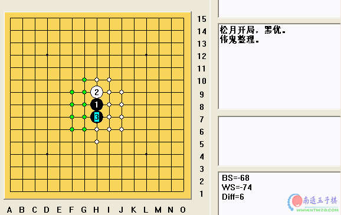

松月全谱
首页
定式及研究
#1 松月全谱 作者：有志青年 发表时间：2006-9-10 12:07:09

 松月全谱.rar
松月全谱.rar
#2 Re:松月全谱 作者：酒鬼 发表时间：2006-9-10 16:10:36

#3 Re:松月全谱 作者：潇洒 发表时间：2006-9-10 16:34:36
看看
#4 Re:松月全谱 作者：出云 发表时间：2006-9-10 18:03:43
：）
#5 Re:松月全谱 作者：uniwin 发表时间：2006-9-11 13:36:57
松月全谱
看看
#6 Re:松月全谱 作者：icai 发表时间：2006-9-19 20:17:42
看看
#7 Re:松月全谱 作者：news 发表时间：2006-9-22 17:28:42
支持一下。楼主辛苦了
#8 Re:松月全谱 作者：九命猫 发表时间：2006-9-27 20:04:20
学学
#9 Re:松月全谱 作者：魔法少年 发表时间：2006-9-28 11:11:12
学习一下
#10 Re:松月全谱 作者：mqsdkx 发表时间：2006-9-29 13:59:38
看看
#11 Re:松月全谱 作者：yybns 发表时间：2006-10-5 17:45:49
一打必胜是不是全了，看看
#12 Re:松月全谱 作者：特磨道 发表时间：2006-10-8 11:09:52
松月全谱
#13 Re:松月全谱 作者：天涯游子 发表时间：2006-10-8 15:03:59
学习
#14 Re:松月全谱 作者：头文字D 发表时间：2006-10-11 20:55:00
看看
#15 Re:松月全谱 作者：duanwh 发表时间：2006-10-12 16:21:04
看看
#16 Re:松月全谱 作者：duanwh 发表时间：2006-10-12 16:23:07
下了之后还是你这一张图面啊，
#17 Re:松月全谱 作者：寂静的海岛 发表时间：2006-10-16 10:57:55
不错的棋谱，顶
#18 Re:松月全谱 作者：金属玫瑰 发表时间：2006-10-17 17:21:42
多谢
#19 Re:松月全谱 作者：longyu 发表时间：2006-10-17 19:30:48
oooooooooo
#20 Re:松月全谱 作者：daiyue 发表时间：2006-10-18 19:09:20
看看。
#21 Re:松月全谱 作者：五子迷 发表时间：2006-10-20 10:22:09
....
#22 Re:松月全谱 作者：昵嗒 发表时间：2006-10-21 0:51:41

#23 Re:松月全谱 作者：qdwjl 发表时间：2006-10-23 17:52:22
hao de 学习
#24 Re:松月全谱 作者：小海龟 发表时间：2006-10-25 0:28:46
学习
#25 Re:松月全谱 作者：无尘 发表时间：2006-10-25 21:05:39
好黑啊..我回了.
#26 Re:松月全谱 作者：zhc120 发表时间：2006-10-26 12:13:44
看看到底是什么东东
#27 Re:松月全谱 作者：黄色枫叶 发表时间：2006-10-26 12:26:15
学习
#28 Re:松月全谱 作者：nara 发表时间：2006-10-26 22:41:57
hao
#29 Re:松月全谱 作者：天上掉个馅饼 发表时间：2006-10-29 6:22:20
倒～，看～
#30 Re:松月全谱 作者：daba 发表时间：2006-11-5 0:38:36
re
#31 Re:松月全谱 作者：lfc80 发表时间：2006-11-8 19:14:59
棋谱，看看！
#32 Re:松月全谱 作者：某君 发表时间：2006-11-10 18:39:06
脑筋连脚裤
#33 Re:松月全谱 作者：幽戏 发表时间：2006-11-12 15:52:06
谢谢
#34 Re:松月全谱 作者：cjh199 发表时间：2006-11-13 20:40:08
xuexi
#35 Re:松月全谱 作者：天线宝宝 发表时间：2006-11-19 8:33:14
看看
#36 Re:松月全谱 作者：ntren 发表时间：2006-11-19 11:37:06
支持
#37 Re:Re:松月全谱 作者：龙少天下第一 发表时间：2006-11-30 1:37:30
引用：
原文由 uniwin 发表于 2006-9-11 13:36:57 :
松月全谱
看看
#38 Re:松月全谱 作者：我是正牌寒星 发表时间：2006-11-30 12:09:37
参考一下：）
#39 Re:松月全谱 作者：其实不是我 发表时间：2006-12-4 14:46:34
kankan
#40 Re:松月全谱 作者：liaosu 发表时间：2006-12-5 19:51:34
good
#41 Re:松月全谱 作者：潍县秀才 发表时间：2006-12-11 13:34:00
支持！谢谢
#42 Re:松月全谱 作者：gerbo 发表时间：2006-12-17 14:36:40
看看
#43 Re:松月全谱 作者：free 发表时间：2006-12-17 18:22:11
来学习一下
谢谢分享
#44 Re:松月全谱 作者：妖狐 发表时间：2006-12-17 21:16:16
kankan
#45 Re:松月全谱 作者：紫风铃 发表时间：2006-12-18 6:04:52
谢谢
#46 Re:松月全谱 作者：紫风铃 发表时间：2006-12-18 6:09:13
怎么打开？
#47 Re:松月全谱 作者：nifeng 发表时间：2006-12-18 22:21:21
jixu
#48 Re:松月全谱 作者：thl500 发表时间：2006-12-22 12:44:23
学习
#49 Re:松月全谱 作者：南通小小包 发表时间：2006-12-22 21:27:07

#50 Re:松月全谱 作者：o心 发表时间：2006-12-23 12:29:48
看看
#51 Re:松月全谱 作者：学无止境 发表时间：2006-12-24 12:27:49

#52 Re:松月全谱 作者：zy 发表时间：2006-12-25 15:50:23
看看
#53 Re:松月全谱 作者：反西文 发表时间：2006-12-26 13:11:03
dddddddddd
#54 Re:松月全谱 作者：zhy713 发表时间：2006-12-27 10:47:24
要le
#55 Re:松月全谱 作者：总趋势 发表时间：2006-12-27 18:09:13
ddddddddddddddd
#56 Re:松月全谱 作者：as123 发表时间：2006-12-27 18:16:05
hh
#57 Re:松月全谱 作者：落忆 发表时间：2006-12-28 12:22:38
#58 Re:松月全谱 作者：棋乐穷 发表时间：2006-12-28 13:22:41
谢谢楼主
#59 Re:松月全谱 作者：天外天 发表时间：2006-12-31 13:26:41
跟老师学学
#60 Re:松月全谱 作者：天外天 发表时间：2006-12-31 13:27:40
非常感谢！
#61 Re:松月全谱 作者：ik1314 发表时间：2007-1-2 8:19:37
#62 Re:松月全谱 作者：连珠战神 发表时间：2007-1-6 14:27:04
4仍然
#63 Re:松月全谱 作者：simple 发表时间：2007-1-6 15:22:50
顶啊
#64 Re:松月全谱 作者：A三无 发表时间：2007-1-7 19:25:33
学学
#65 Re:松月全谱 作者：卓家公子 发表时间：2007-1-9 15:02:05
上次看发的云月是个好东西。这个要看！
#66 Re:松月全谱 作者：friend 发表时间：2007-1-15 1:04:56
看看
#67 Re:松月全谱 作者：天上掉个馅饼 发表时间：2007-1-15 14:12:08
学习
#68 Re:松月全谱 作者：catman 发表时间：2007-1-16 19:46:04
学习～～
#69 Re:松月全谱 作者：流星 发表时间：2007-1-21 16:05:50
 鬼老师的东西顶下
鬼老师的东西顶下
#70 Re:松月全谱 作者：dream 发表时间：2007-1-22 14:55:32
看看
#71 Re:松月全谱 作者：顺风 发表时间：2007-1-24 14:03:56
要了
#72 Re:松月全谱 作者：barjoe 发表时间：2007-4-22 13:58:30
楼主辛苦了
#73 Re:松月全谱 作者：renji 发表时间：2007-4-25 8:48:16

#74 Re:松月全谱 作者：gerbo 发表时间：2007-5-1 3:35:46
真的是全谱么，今天(2007年4月28日)我跟小４开发的 挂 下了松月一打，挂拿黑子，结果任 挂 怎么变招，我都可以将 挂拿下 ，我用的是八卦防守方式，结果都是我拿白子全胜．个人认为黑未比必胜！！
#75 Re:松月全谱 作者：井井有条虫 发表时间：2007-5-21 20:16:55
很不错喔・
以前有一小部分变化还不是很明白・现在好了・
#76 Re:松月全谱 作者：clvcmv 发表时间：2007-6-9 23:09:26
多谢楼住,辛苦了...
#77 Re:松月全谱 作者：目光 发表时间：2007-6-28 20:53:21
什么文件，什么打开？
#78 Re:松月全谱 作者：黄药师 发表时间：2007-6-29 23:50:08
虽不是真正的全谱，也不错了，要了！
#79 Re:松月全谱 作者：郎之喜 发表时间：2007-8-6 16:31:43
辛苦楼主啦，顶一下
#80 Re:松月全谱 作者：【空】纹石 发表时间：2007-8-7 12:45:10
初学理论,亢奋中....................
#81 Re:松月全谱 作者：越狱行辕 发表时间：2008-6-28 9:48:29
伟鬼的谱还是不错的 ，提醒大家一下，我下载的时候发现有的谱不能用讯雷下，只能本地下载
#82 Re:松月全谱 作者：叵 发表时间：2008-7-3 13:17:41
已下载.谢谢楼主
#83 Re:松月全谱 作者：菜巫妖 发表时间：2008-7-5 13:44:31
做的好棒，正玩着呢
#84 Re:松月全谱 作者：看棋不输 发表时间：2008-7-5 18:45:29
楼主辛苦了，谢谢
#85 Re:松月全谱 作者：子随心动 发表时间：2008-7-20 9:25:57
能下载吗？
#86 Re:松月全谱 作者：自来自去 发表时间：2008-8-9 16:41:03
收下拉
#87 Re:松月全谱 作者：鸟菜菜 发表时间：2009-5-26 9:26:02
学习下，看看
#88 Re:松月全谱 作者：白点黑点 发表时间：2009-6-2 0:00:11
学习了，很好
#89 Re:松月全谱 作者：退而YW 发表时间：2009-6-2 19:28:02
我很喜欢。谢谢。
#90 Re:松月全谱 作者：迷图不知返 发表时间：2009-7-9 16:46:00
伸手党 路过 支持
#91 Re:松月全谱 作者：亦可 发表时间：2009-7-23 11:15:45
怎么还是打不开啊
#92 Re:松月全谱 作者：高山平原 发表时间：2009-7-29 11:45:09
支持楼主，可是我打不开松月全谱.lib
［ 雨一直下 于 2009-8-26 16:46:03 时奖励此帖[金币加 20 威望加1］0+1
#93 Re:松月全谱 作者：起航 发表时间：2009-8-17 0:28:05
呵呵，下回去看看。
#94 Re:松月全谱 作者：蔡鸟 发表时间：2009-8-25 22:15:42

#95 Re:松月全谱 作者：岁月随月 发表时间：2009-9-1 0:55:00
非常好，谢谢
#96 Re:松月全谱 作者：t周 发表时间：2009-9-1 6:53:40
=======上图对应的爱五子棋谱代码如下，以便你拆解：========
h8h9h7h6j7g8i7g7g9j6i5f7e6i6g6f10f5e4f8d7k6l7l5m4j11h10
======================================================
=======上图对应的爱五子棋谱代码如下，以便你拆解：========
h8h9h7h6j7g8i7g7g9j6i5f7e6i6g6f10f5e4f8d7l7k7k6j5l5i8l6l8m6m4
======================================================
=======上图对应的爱五子棋谱代码如下，以便你拆解：========
h8h9h7h6j7g8i7g7g9j6i5f7e6i6g6f10f5e4f8d7l7k7k6m8l5m4j5k5
======================================================
#97 Re:松月全谱 作者：影影绰绰 发表时间：2009-9-26 23:34:45
支持一下。楼主辛苦了